Hi, and welcome to game.midoshiro.com
It pains us to say that our site may be incomplete, but we are working to bring you more updates and info on the game as we speak!
When you hit an incomplete patch of walkthrough (e.g. Chapters 4 and later), feel free to watch a recorded playthrough on YouTube. On some videos, other players have left comments with excellent advice and strategy.
You can also visit our contact page to share your thoughts, ideas, and compliments. Diligent and confident completionists can also upload their best save files to help us provide the best and accurate info on the game!
Estelle and Anelace finished their training course and arrives at Grancel. Just after Elnan informs the two that monsters have been acting weird recently, Scherazard and Agate show up. It seems that Elnan has a special mission for the bracers to investigate the Ouroboros and need them to split into two teams.
Estelle and her teammate head to Ruan, where they investigate sightings of a white shadow. They track it down to the Jenis Royal School, where they discover underground ruins underneath the Old Schoolhouse. As they investigate the ruins and reach the far depths of it, they encounter Legion X, Blblanc (a.k.a the masked pervert).
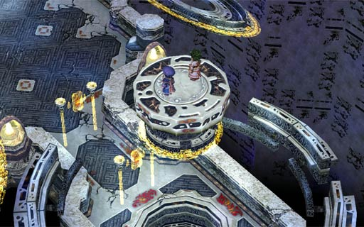
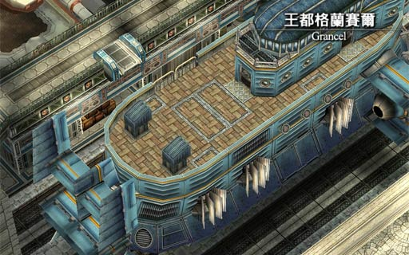
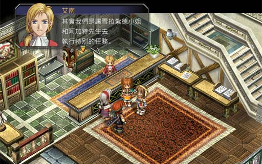
Elnan: Actually, we are getting Ms. Scherazard and Mr. Agate to do a special mission.
OK, so the chapter starts off with Estelle and Anelace reporting to the Grancel Bracer Guild. Elnan first gives you some pocket money (since paid training is one of the perks of the job -- omg hell yeah!). If you made the right choices in the training camp, you should have enough BP to rank up to G+ and receive the Silver Pendant (銀製掛墜) prize item, which gives you DEF+15 and protects you against poison.
Scherazard and Agate will soon enter and Elnan reveals that there is a special mission to investigate the Ouroboros. Estelle and Anelace volunteer to help out and the group agrees to break up into two groups, one investigating Bose and the other Ruan. Anelace "delegates" the task of choosing partners to Estelle, so ...
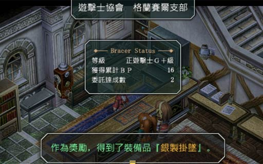
Seriously, there isn't much difference between choosing the two, as you're heading to Ruan no matter what. Your choice of partner pretty much only affects the dialogue and, occasionally, a slight strategy tweak when fighting monsters. That being said, you should choose the partner who best complements your play style as you're stuck with him/her for the next few chapters.
Edit (March 10, 2013): I might have accidentally downplayed "affects the dialogue" a bit too much. Yes, some text is "affected" if you pick Scherazard, but picking her gets you a few more bits of additional dialogue (e.g. in Chapter 2).
I've beaten the game with both characters (first Scherazard, then Agate). I find playing with Agate to be total easy mode, though I'm not sure whether it's because of his high damage + Seal, or if it's because I picked him on my second playthrough and I more or less know what I was doing ...
These were Agate and Scherazard's starting stats for my game. Note Agate's increased HP/STR/DEF (and ADF which makes no sense) compared to Scherazard's increased EP/ATS/AGL/RNG.
| Attribute | Agate | Scherazard |
| Level | 42 | 42 |
|---|---|---|
| HP | 2932 | 2677 |
| EP | 75 | 130 |
| STR | 358 | 314 |
| DEF | 307 | 298 |
| ATS | 135 | 193 |
| ADF | 45 | 14 |
| SPD | 18 | 18 |
| DEX | 19 | 19 |
| AGL | 7 | 8 |
| MOV | 6 | 6 |
| RNG | 1 | 3 |
| Crafts | Spiral Blade Flame Smash Dragon Knight Blade Bull Roar II 2xS-Craft | Wind Whip Bind Whip Heaven Kiss 1xS-Craft |
Agate comes with many advantages. With the increased STR, he is a strong melee attacker and with the higher HP/DEF, a tank too. He also comes with a Seal quartz (10% chance of sealing enemy attack/craft on hit) which can sometimes turn the tide in battle. His major drawbacks is his magic is relatively horrible (lower ATS/EP, and his orbment has 3 lines) and his attack RNG is 1 (so do try to boost his MOV stat whenever possible).
Scherazard is more "average" and well rounded. She is a stronger spellcaster (higher EP/ATS, 2 lines—one of which is really long = possible powerful spells). Her whip also gives her an attack range bonus (RNG3 vs Estelle's RNG2). She also comes with a Sleep quartz (10% of causing enemy to sleep on hit).
In terms of crafts, I find Agate to be a bit more "useful". Spiral Blade causes AT Delay on one monster, while Bull Roar II recovers a whopping 150 CP (max 70% HP damage). Agate also has two S-Crafts, one attacks a single monster and the other attacks monsters in a medium circle.
For Scherazard, I only find use for Heaven Kiss, and you get the best "value" from it only with a full party ...
The walkthrough will be Agate-centric (since I picked him when I was screen-recording), but I will throw in Scherazard tips when I can remember them (or if people e-mail them to me).
After seeing the other team off, make your way to the Airship building (the big one) to watch an interesting scene with the ambassadors. Talk to the employee on the right side to pick up your airship tickets. You can talk to the employee on the left to buy a copy of the Liberl Times #2.
When you exit the building, head down and to the right a little bit. There is a small circular booth. Talk to the employee there to board the airship. Estelle will be doing quite a bit of flying in this game (for the lulz, Falcom should have given her frequent flyer elite status), so don't forget: booth guy = board airship = continue plot.
Onboard, talk to everyone to continue the plot (don't forget the worker at the bottom-most cargo floor). There is a man at the top floor who will give you a fishing rod and a Fishing Handbook.
When you arrive at the Ruan Bracer Guild, Jean is troubled at recent sightings of a white shadow, which freaks out Estelle since uh...seems that she's afraid of ghosts. There are three witnesses to talk to: Beruf (貝爾夫) from the Raven Gang, Nicks (尼克斯) at Air Letten, and Boli (波利) from Mercia Orphanage.
Check the bulletin board and accept the first four jobs. There will be a battle somewhat soon, so if you don't feel ready, you can shop around for quartz, items, and equipment. Cross the bridge and head to the warehouses (left and down). You'll be stopped by Llyod (from the airship) who will take you to a fishing spot in the city and starts you off with Sea Cucumber x5.
From the fishing spot, go down the stairs and head right. Once you go up the stairs, head south and right to the warehouses. You can open the right door to fight the Raven Gang.
The Raven Gang members start off waaaaay back in the battlefield. If it's your turn before theirs, don't bother moving up (let them move to you) so you can get hit one fewer time (instead, consider using Estelle's Morale craft, using Agate's Bull Roar craft to refill CP, or having Scherazard cast some buff spell).
The bosses will occasionally "shout" to each other which will either give a stat buff, do minor healing, or resurrect. A good strategy then, is to spread out your attacks so that they don't resurrect and heal each other.
The bosses also have two other crafts. One, 任人宰割, will either lower your DEF or cause Seal on your character. The other, rarely used, is 蝕人一擊, which will do quite a bit of damage (over 800).
If you chose Agate, this battle will be much simpler. Always have him use regular physical attacks so that you can take advantage of his Seal quartz to randomly seal the enemy. Do note that the Seal effect does wear off (but it typically lasts quite a while, and the other Raven gang members aren't able to cure it).
After defeating the Raven Gang, to find Beruf, go back to the bridge and continue heading right. Turn south and enter the house just above Ruan south exit. Watch the cutscene.
Our next witness to interview is Boli from the orphanage. Go up the bridge and head to the Ruan north exit. But before you leave the city, go to the weapon store. Ensure you have 3 accessories that protect against poison (so probably buy 2x Silver Earring). Now take the north exit to the Gull Seaway.
Head to the orphanage. Teresa tells you the children are attending classes taught by a "wandering priest" (reminds you of anyone?) in nearby Manoria Village. Leave the orphanage and walk to Manoria Village.
The children are attending classes in the windmill. When you go there, Estelle will remember the lunch she shared with Joshua in Trails FC. She will also listen in to the last bit of class where—shock!!! the wandering priest teacher is Kevin.
After the fadeout, everyone is back at the orphanage where Boli recalls what he saw about the white shadow. The team bids farewell to the kids and agrees to go back to Ruan together ... NOT!!
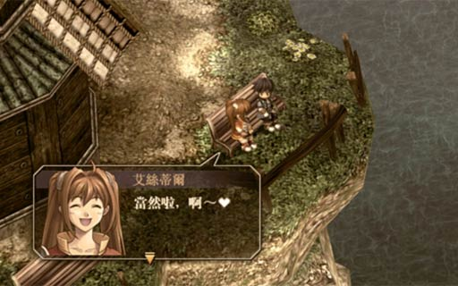
Now that you have Kevin in your party, the monster sidequests have become easier. Kevin's current stats makes him better off as a spellcaster due to his relatively high EP/ATS and relatively low STR/MOV. His crossbow weapon allows him to attack enemies from a farther range.
Before entering Ruan, remember to de-equip Kevin (remember to take back your Silver Earrings!) and steal all his quartz mwahaha. You should also report your sidequest results to Jean for some much need pocket money (~$5500) to spend.
Go to south Ruan, take the south exit, and go to Air Letten. When you enter, head to the end of the hallway to talk to Captain Haen (哈恩). After you exit his room, the bottom of the side rooms is the cafeteria where you can purchase Salt-crusted Crustacean (鹽釜甲殼燒). Now go upstairs, talk to Nick who is guarding the gate, then go downstairs and watch a cutscene with Renne. Return to Ruan.
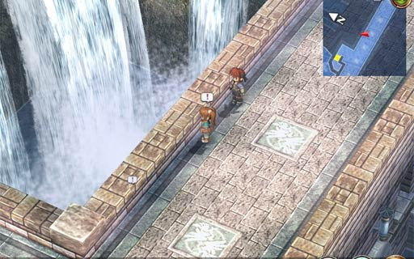
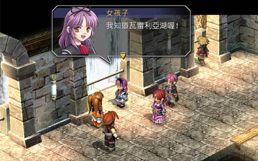
Go to the Bracer Guild where you meet Nial and Dorothy who are covering the city election. They do get their scoop—there's some sort of commotion going on at the bridge. Just when the situation is about to go out of control, Olivier comes in to the rescue at the last minute with his lute.
With the situation over, everyone returns to the Bracer Guild. Taking a look at the interview notes, Olivier notices something and pull out a map of the area. Based on what the witnesses said, it looks like the white shadow might be located at the Jenis Royal School.
The reporters split up: Nial goes off to interview the two election candidates while Dorothy joins the team to take ghost photos. Naturally, Olivier joins the team as well.
Olivier joins your party relatively weak, with less HP and STR. However, his gun gives him significant range (RNG5, which is even higher than Kevin's RNG4), and his ATS is relatively high.
But the coolest thing about Olivier? Check out dat orbment! It's a single line, with only one slot restricted to Mirage quartz, which can allow him to cast some really high level magic later in the game.
Caution Dorothy is now a guest in your party until you defeat the first (forced) battle in the Underground Ruins.
For those who haven't played Trails FC, it's game over the moment a guest dies (you don't get a chance to revive them).
So if you enter any battles, pay attention to her HP and heal when necessary as she can take probably 3 hits max from regular monsters.
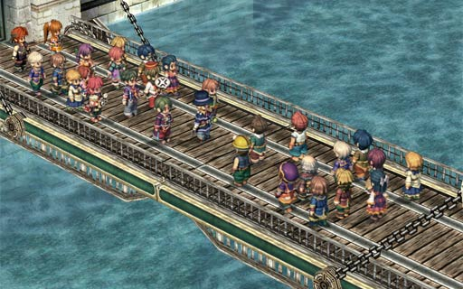
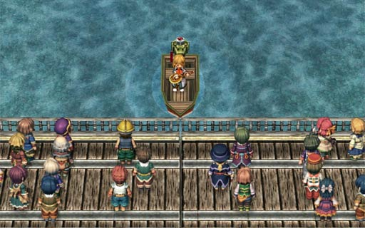
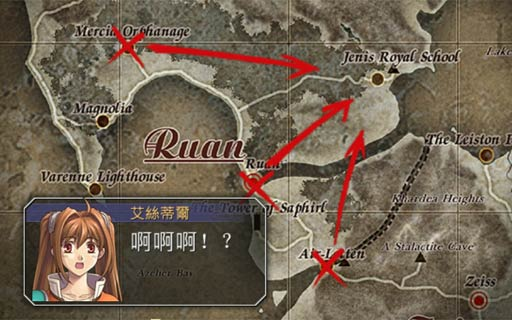
Before heading to Jenis Royal School, go back to the Bracer Guild as a few more sidequests have opened up (and an old one to complete):
If you intend to complete the "Photograph the Sapphirl Tower" quest, head over now to the Hotel Blanche (left of the Bracer Guild) and make an immediate U-turn to the left when you enter. Enter the first door and talk to the scientist to receive a camera.
On your way to Krone Pass, you will pass through Manoria Village. If you were lucky enough to collect all the monster ingredients, feel free to give them to the guy in the hotel. Additionally, remember to buy some food from the hotel restaurant: Enchanting Seafood Skewers (魅惑海鮮燒串) $600, Miso Stewed Fish (味噌燉魚) $300, and Seafood Special "Fish Roe Bubbles" (海味鮮珍「魚卵泡」) $550.
Soon after you enter the school, Kloe welcomes you in. After getting permission from the principal, the team investigates the white shadow on campus with the help of the student council.
Advice For some additional dialogue, talk to everyone, especially Hans (library room across from student council room) and Olivier (outside, in front of the cafeteria).
The cafeteria also sells some food. Don't forget to buy Hot Hot Fried Taro $100, Royal Soft Cream $350, and Missy Meal $800.
Estelle and Kloe need to interview a few students: Reina (girls dorm, first door on second floor), Mig (first floor classroom), and Batomu (巴托姆, second floor bulletin board). After talking to the three students, if the sun doesn't set, try visiting the school auditorium so that Estelle and Kloe can reminisce about the good ol' days of FC.
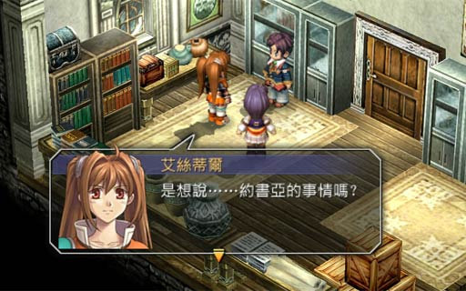
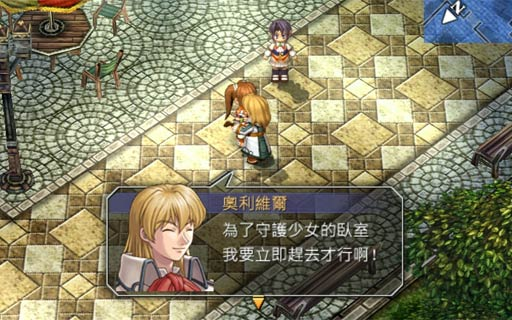
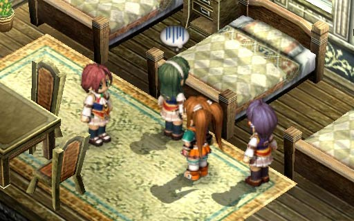
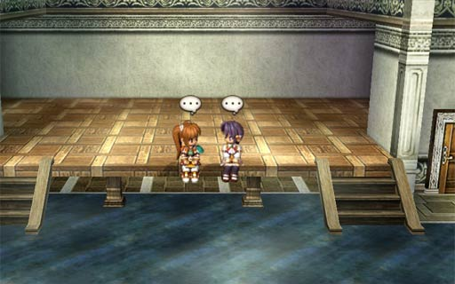
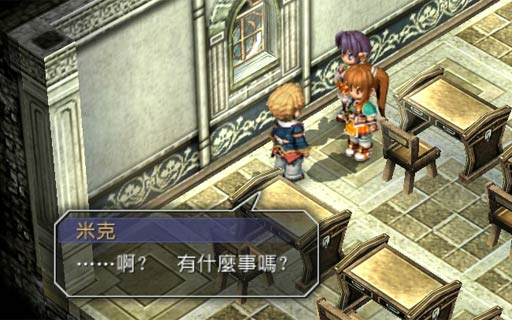
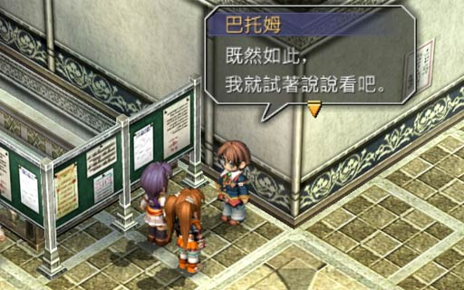
Once you're done, leave whatever building (auditorium, girls dorms, school building) and the sun should begins to set (if not, you missed something). Estelle and Kloe should return to the student council room where everyone shares what they discovered. Estelle also notices something outside the window ... and faints.
Estelle wakes up in a bedroom in the girls dorm and the team decides to investigate the old schoolhouse at the back. Kloe tags along to fill in as the fourth member of the team, while the other two students stay behind.
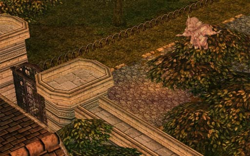
("Beartooth Whip" doesn't make sense, but that is the literal translation of 熊牙鞭 in the Chinese version. I think my game might have some sort of translation error ...)
Like almost all JRPGs, Kloe is a good healer/support character since she is a weak melee attacker. I think the game really "forces" you to make her a healer with her orbment (try putting on HP2, Spirit2, and Heal).
Her biggest drawback is that she comes really underlevelled. My party was level 46 and she starts off at level 38!? Although I was only able to get her to level 42 too before fighting the boss, at that point her ATS was already second most powerful, losing out only to the level 46 Olivier!
When I played FC, I didn't use her except for her S-Craft, but there are many battles in SC where her "Fighting Spirit" craft can help out a lot, even if it's only STR-10% and DEF-15%. Her S-Craft spell is also useful for emergency group healing, especially since we won't be able to unlock the big-area heal spells for another few chapters.
x10 , Medicine
The team is greeted with a card at the front door of the old schoolhouse. The first clue is the "empty flame" (虛無之炎), which you will find at the right side of the rear staircase. The second clue is the "student that faces south" (向南的學生) which is the "good" desk in the first classroom on the first floor left hallway. The last clue is the "fallen head" (落下的頭) which can be found on the outside balcony at the right side of the second floor. The last clue leads to an old key.
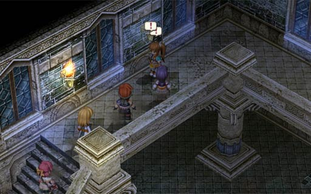
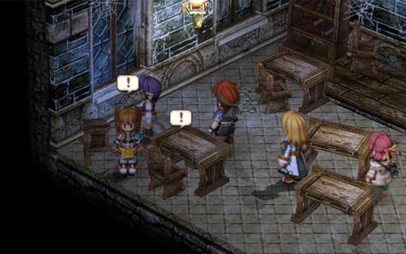
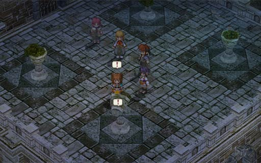
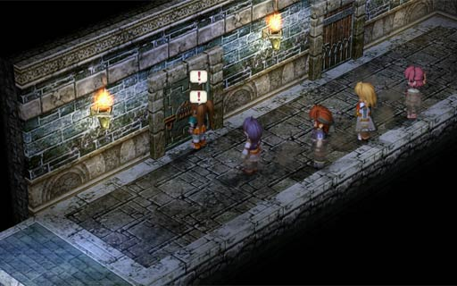
Return to the first floor and go to the right hallway. The old key opens the special-looking first door. Once inside, examine the statue and Agate/Scherazard will find a hidden switch to open a hidden path to the underground ruins. When you go down, use the healing device and save. There will be a forced battle in the next room with a somewhat strong monster.
Advice To make the next battle easier and faster, ensure everyone is able to cast either Earth Hammer or Fire Bolt.
This battle will take a while, especially since the Mildew Fog's primary ability is "HP Leech". Although Dorothy is still in the party, you shouldn't need to worry too much about her as she will try to stay out the way.
The Mildew Fog also has some additional abilities. One is Darkness Breath (黑暗之息) which can cause blind (not a big deal since it doesn't affect spellcasting). The other is a medium-circle spell Aerial (狂怒風暴). Finally, the Mildew Fog can also use "Super HP Leech" (especially when its health is low), which sucks HP from multiple allies.
Once the Mildew Fog's HP is somewhat low, feel free to use your S-Crafts to prevent it from using Super HP Leech. If you're playing with Agate, you can also experiment with using Spiral Blade for AT Delay. For those using Scherazard, since you have a full party, you can consider using Heaven's Kiss as well.
After defeating the mildew fog, the team decides that it's way too dangerous for Dorothy to follow them, and so leaves her behind.
Jenis Boy's Uniform, Medium Medicine x2, ?? Gun (刺彈槍), Resurrect Medicine, Attack2, EP Restore 1 x2, Insulating Tape, Shield1, Feather Chestpin
S-Pill, ?? Shoe (流浪者), EP Restore 1 x2, Resurrect Medicine, Resurrect Powder (resurrect with full HP), Medium Medicine, Cast2
The underground ruins isn't too hard, but very annoying. Usually, when you kill off monsters in an area, they don't regenerate for a while. In here, however, the monsters regenerate as soon as you enter and exit a room. What's worse is that many of them will also chase you. At least you can farm lots of experience to get Kloe up a few levels.
When you reach the second floor of the ruins, there is yet another forced battle once you enter the next room. Again, it's a mildew monster, but with a few reinforcements as well (). The strategy is more or less the same, except that you should focus on the fog monsters first, then the mildew monster, then the horses.
When you reach the recovery device, be prepared for a boss fight in the next room.
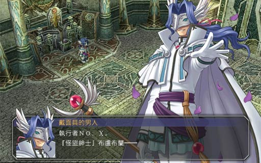
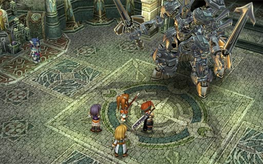
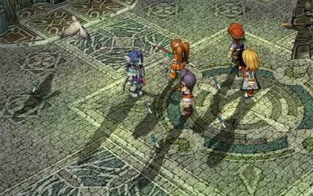
The boss is able to summon horses (which buffs all enemies on death), so focus attacks on the boss as much as possible and leave the horses to the end.
The boss has two primary crafts. The first, Storm Blade (風暴之刃) does damage in a small circle with a chance of lowering MOV. The second, Energy Explosion (能量爆炸) is what you want to watch out for. It does massive (over 1500!!) damage to the entire battlefield. You can tell if the boss is going to use it when it raises two glowing orange swords in an X shape. When you see this happen, you must dispel it before the boss' next turn. If you are not able to dispel it in time, use Kloe's S-Craft immediately after taking the damage (remember that S-Craft can pre-empt the AT Gauge and be used any time).
Start the battle off by getting everyone as close to the boss as possible (and try to avoid "clumping up" near the boss). This should counteract most of the Storm Blade's MOV down effect (you should still be close enough to the boss to physically attack it). To help counteract the powerful Energy Explosion craft, you should keep everyone's HP above 1600 and Kloe's CP above 95 at all times.
Next, have Kloe use "Fighting Spirit" on the boss to lower its STR and DEF. Whenever the effect expires, use the craft again (except if it will put Kloe's CP below 100). The team should either grind through the boss with physical attacks or use Ground/Water spells (though probably only Kloe and Olivier can do more spell damage than physical damage). Again, focus on the boss and leave the horses for the end.
If Scherazard is in your party, don't forget to use Heaven's Kiss for "double turns".
After the boss fight, there is a cutscene and the team automatically returns to the Ruan Bracer Guild. Then the chapter-end cutscene plays.
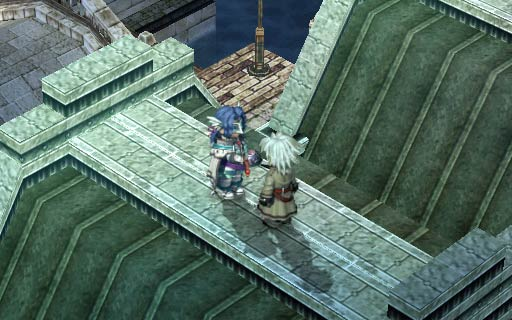
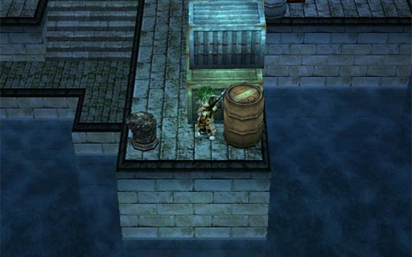
If you haven't already, finish off your sidequests (don't forget about the "Collecting Ingredients" sidequest either). Go back into the Bracer Guild and check out the job board. There are also two more sidequests to do:
Once you are done, go to the airport and talk to the person in the booth and confirm that you're done with Ruan. Next stop, Zeiss.
| Quest/Action | BP | Total |
|---|---|---|
| Main Quest: Investigate the White Shadow | 5 | 8 |
| ... choose "The direction where the white shadow headed" at the Bracer Guild | +3 | |
| Sidequest: Vista Forest Road Monster | 2 | 2 |
| Sidequest: Photograph the Sapphirl Tower | 1 | 3 |
| ... and got Dorothy to take the photo | +2 | |
| Sidequest: Gull Seaway Monster | 3 | 3 |
| Sidequest: Collect Ingredients | 2 | 3 |
| ... and collected one of EVERYTHING on the list | +1 | |
| Sidequest: Krone Pass Monster | 2 | 2 |
| Hidden Sidequest: Lighthouse Test Run | 2 | 3 |
| ... and remembered to ask "Is there anything else?" at the end | +1 | |
| Sidequest: Aurion Road Monster | 3 | 3 |
| Sidequest: Sunday School Lecturer | 2 | 4 |
| ... and answered everything correctly | +2 | |
| Sidequest: Gambler Needed | 2 | 2 |
| Hidden Sidequest: Election Office Incident | 5 | 5 |
| Total (this chapter) | 38 | |
| Total (cumulative) | 54 | |
Recipes: Arthuria's Kiss, Seafood Macaroni Noodle Soup, BBQ Salmon Belly, Salt-crusted Crustacean, Enchanting Seafood Skewers, Miso Stewed Fish, Seafood Special: "Fish Roe Bubbles", Hot Hot Fried Taro, Royal Soft Cream, Missy Meal, Dangerous Meatball, Sakana: "Sashimi"
Books: Fishing Handbook, Liberl Times #2, Gambler Jack #2

Readers' Comments